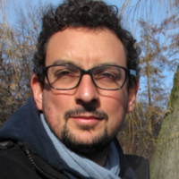

| Email: | [initial].[lastname] [at] uvt.nl |
| Office: | D108, Dante Building, Tilburg University |
| Address: | Department of Cognitive Science and Artificial Intelligence |
| Tilburg University | |
| PO Box 90153 | |
| 5000 LE Tilburg | |
| The Netherlands |
I’ve just started an assistant professorship in the department of Cognitive Science and AI at Tilburg University! Before that I worked in Shravan Vasishth’s lab, at the Department of Linguistics of University of Potsdam, Germany.
For my PhD, I worked on computational cognitive models that link memory processes with sentence comprehension, and on individual differences in sentence processing. The most important output of my PhD was this paper about models of retrieval; DOI: 10.1016/j.jml.2017.08.004. The paper shows the computational implementation of two different sentence processing theories (a verbal model and an ACT-R model) on the same framework using hierarchical Bayesian modeling.
I’m currently focusing on predictions in language using EEG:
The first output of the project is the following preprint; using novel EEG data, together with a meta-analysis of available data, we show that the N400 effect is, at least in part, caused by linguistic preactivation that occurs prior to the predicted target word, as opposed to semantic integration that occurs after the target word has been read. While this idea has been present in the literature for more than 10 years, experimental evidence has been so far controversial and included several failed replications. (Revised version comming soon).
I’m also exploring the use of word2vec embeddings to predict N400 effects.
In addition, I’m developing a package for the manipulation of EEG data in R: https://bnicenboim.github.io/eeguana/. It is in the early stages of development, but feedback and comments (and github issues) are welcome.
Other topics of interest of mine are statistical methods and Bayesian modeling: I’m currently working with the linear ballistic accumulator (see my Stancon submission).
Data and code for my published papers is mostly in the OSF website (with some exceptions in my github repo). And I’m also contributing to the list of publicly available psycholinguistics datasets.
📅 I’m teaching the following workshops/summer schools:
an introduction to computational Bayesian methods using Stan together with Shravan Vasishth in Berlin in the framework of Physalia courses. 16-20th March, 2020
advanced Bayesian methods using Stan at the The Third Potsdam Summer School on Statistical Methods for Linguistics and Psychology (SMLP), University of Potsdam, Germany. 7-11th September, 2020.